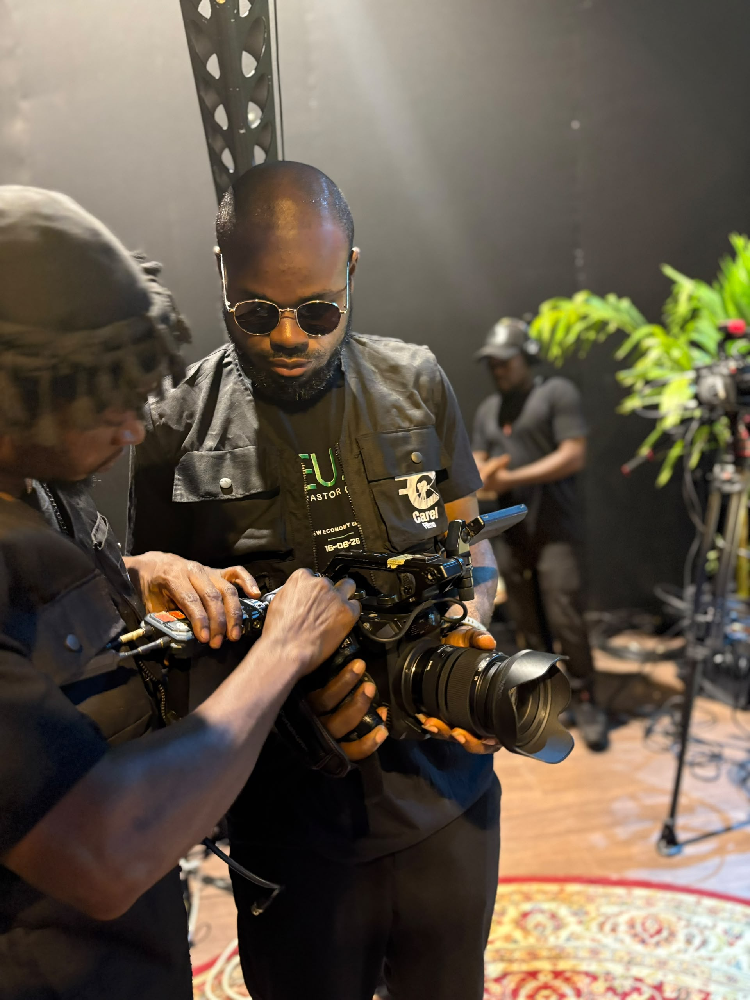

01
Carel Films
Production & Camera OperatorWorking in video editing and camera operation, contributing to production activities and visual content delivery.

Video Editor | Film Producer | Cinematographer
I'm Ogar Doniel Spark, a creative video editor, film producer, cinematographer and camera operator passionate about bringing ideas to life through powerful visuals.
My work covers video production, camera operation, post-production and digital content creation. I enjoy transforming concepts into engaging visual stories that communicate, connect and leave an impression.
Through my experience with different production teams and media organisations, I have developed practical skills in visual storytelling, production coordination and creative collaboration.
Every production experience has contributed to my growth behind the camera and in the editing room. Here are some of the organisations and teams I've worked with.
Working in video editing and camera operation, contributing to production activities and visual content delivery.
Led and coordinated media-team activities, supporting production planning, teamwork and delivery of media projects.
Contributed to visual content production through camera operation and video editing, combining technical skills with creative storytelling.
Great visuals are not only about what the camera sees. They are about the story, the emotion and the experience behind every frame. I bring creativity, technical understanding and collaboration together to make every production meaningful.
Creating engaging visual narratives that communicate ideas effectively.
Combining camera skills and production knowledge to capture compelling visuals.
Working with teams to bring creative concepts and production goals together.